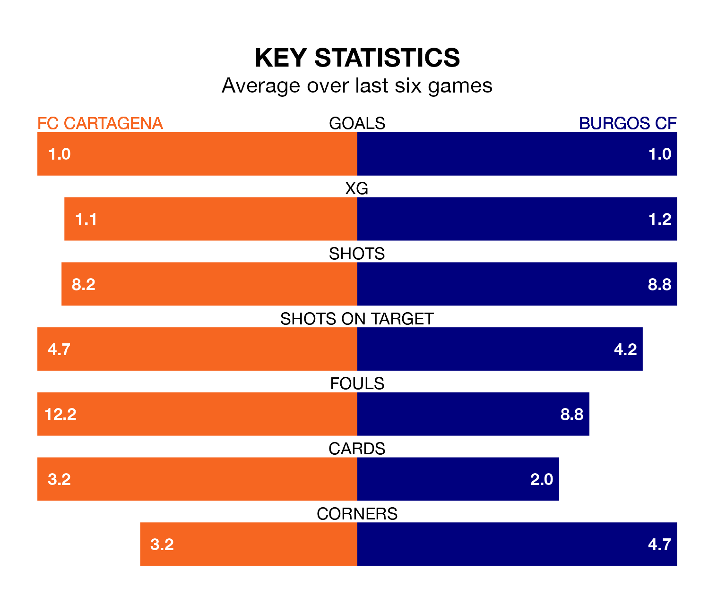

Struggling FC Cartagena face Burgos CF at the Estadio Municipal Cartagonova on Saturday looking to build on a win in their last league outing.
After securing all three points with a 2-1 victory over Elche CF on December 10, FC Cartagena sit 20th in the Segunda División.
They travel to play a Burgos side 13th in the standings, who were held in their last match, 0-0 against Mirandés, on December 9.
In Curro Sánchez, Burgos have one of the league's sharpest shooters so far this season. He has notched eight goals in 19 appearances, to sit third in the scoring charts.
His goal rate of one every 203 minutes is quicker than that of Alfredo Ortuño Martínez, Cartagena's top scorer with a goal every 265 minutes, and a total of five goals in 18 games.
With 17 goals in 19 games so far this season, FC Cartagena are scoring at below the league average rate with 0.9 goals per game. And they are conceding more than average, letting in 28 goals at a rate of 1.5 per game.
Burgos CF, meanwhile, are average scorers, with 1.2 goals per game. They have conceded 1.3 goals per game.
The hosts are in mixed form in the Segunda División, with two wins and three draws from their last six games.
And also with two wins and three draws over that period, the away team's form is identical – they have both taken nine points from 18.
